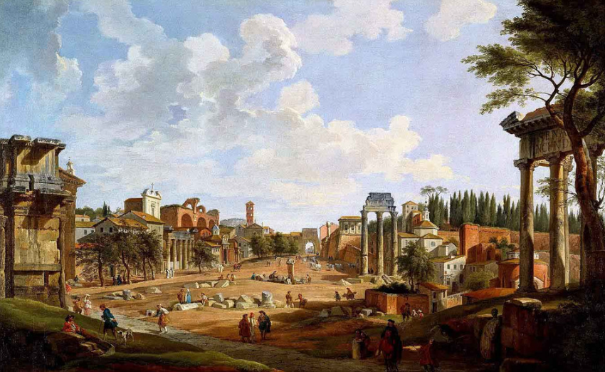

"Truth is the beginning of knowledge" -Aristotle
In the Garden of Eden, the moment Adam and Eve eat the forbidden fruit marks a profound shift in the human condition. By gaining the knowledge of good and evil, they also become painfully aware of their mortality, the fleeting nature of existence, and the inevitability of suffering. This ancient story encapsulates the birth of self-awareness, not only of our capacity for choice but also of the burden of knowing that our time on Earth is finite. From that moment, humanity has been grappling with this awareness—a truth that brings both freedom and despair.
Dante’s Inferno, part of The Divine Comedy, echoes this confrontation with mortality, illustrating the consequences of choices in the face of suffering and the inevitability of death. As Dante descends through the circles of Hell, he encounters souls who have yielded to their darker impulses, illustrating the destructive potential of despair and nihilism. Each soul in Inferno reflects the consequences of choices made with disregard for humanity, both their own and others. Dante’s journey reveals that while suffering and death are unavoidable, our response to them defines our legacy and our impact on the world.
Every day, we are faced with this existential dilemma. We can allow ourselves to become consumed by the seeming futility of existence, to “burn it down for the sake of the heat” and embrace nihilism. This path may bring temporary release but often leads to the isolation and destruction that Dante so vividly portrays. Alternatively, we can choose to bear the weight of our suffering with purpose, to embrace responsibility not only for our own lives but also for those we love and for humanity as a whole. This choice is symbolized by the metaphorical “cross” that each of us carries—a burden that, though heavy, offers meaning and connection.
Ultimately, we are bound together in our shared human experience. The way we regard others is often a mirror of how we view ourselves. If we hold contempt for others, we may find that it reflects an underlying contempt for our own potential and worth. But when we choose compassion and responsibility, we elevate not only our own lives but also the lives of those around us. By carrying this burden, we affirm our place within a greater whole, recognizing that, in a sense, we are our neighbors. In choosing to bear our suffering with dignity, we not only redeem ourselves but contribute to the redemption of humanity.
As Dante journeys through Inferno, he is confronted not only with the suffering of those who succumbed to temptation but also with the inevitability of suffering as part of the human condition. His journey through Hell is a powerful metaphor for the struggle that each of us faces: the choice between the easy path of indulgence and despair or the harder path of moral responsibility and resilience. This choice resonates deeply with the meditations of Marcus Aurelius, who emphasized the importance of enduring hardship with dignity and choosing what is right over what is easy.
Marcus Aurelius, in his Meditations, reflects on the Stoic principles of acceptance and perseverance. He believed that our lives are shaped by our choices and that we should embrace difficulties as opportunities to strengthen our character. Like Dante, who must navigate through Hell to reach redemption, Marcus teaches that the path to virtue is often marked by struggle. He famously said, “The impediment to action advances action. What stands in the way becomes the way.” This perspective aligns with the age-old observation that hard times forge strong individuals and strong individuals create a flourishing society.
Yet, history shows us that good times can lead to complacency, as expressed in the saying, “Hard times make strong men, strong men create good times, good times create weak men, weak men create hard times.” This cycle reflects a harsh truth about human nature: comfort often breeds weakness, and when people avoid the hard choices, they leave the path of resilience and fall into indulgence. Dante sees this pattern embodied in the souls he encounters, many of whom abandoned their virtues in favor of transient pleasures, ultimately leading to their downfall.
The choice to bear one’s cross—to face adversity with courage and integrity—is a choice that both Dante and Marcus Aurelius advocate. The less beaten path, fraught with challenges, offers the chance to cultivate strength and wisdom. Though it is the harder route, it is the one that sustains both individual character and the collective well-being of society. As Dante reminds us, redemption and enlightenment are not reached by avoiding hardship but by enduring it and emerging stronger. Marcus Aurelius echoes this sentiment, urging us to find meaning in our struggles and to act not for immediate reward, but for the long-term good of ourselves and others.
In a world that often tempts us with shortcuts and easy escapes, these reflections encourage us to choose the path of resilience, to carry our burdens not only for our sake but for the sake of those who come after us. By choosing to grow stronger through adversity, we contribute to a cycle that uplifts and sustains, ensuring that the hard times we face today may one day yield the strong men and good times of tomorrow.
Thanks for taking the time to read this and any thoughts or feedback can be submitted at thee33xp@proton.me